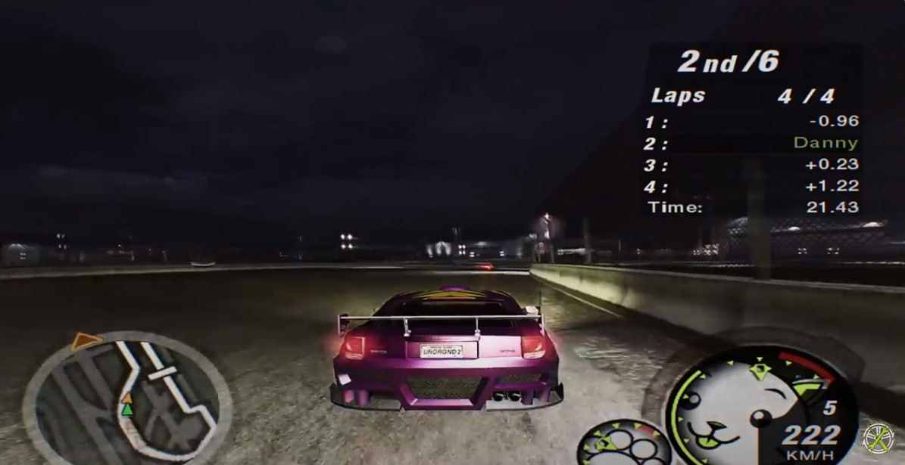
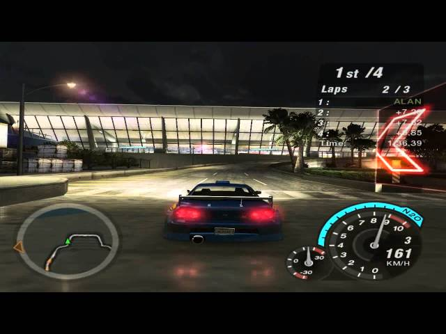
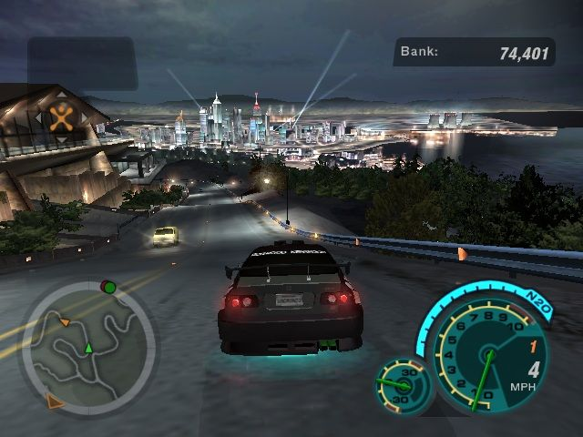
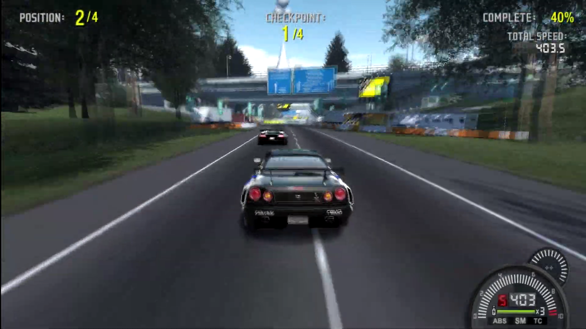
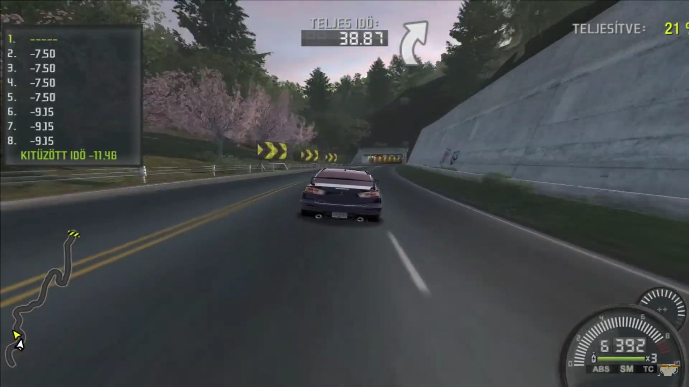
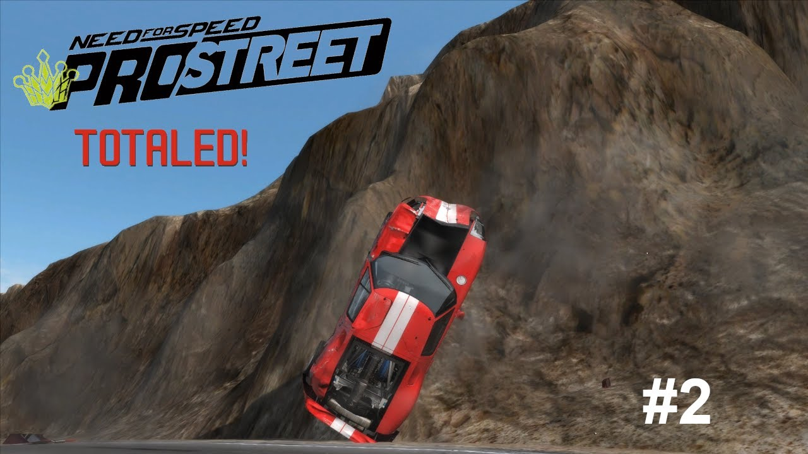
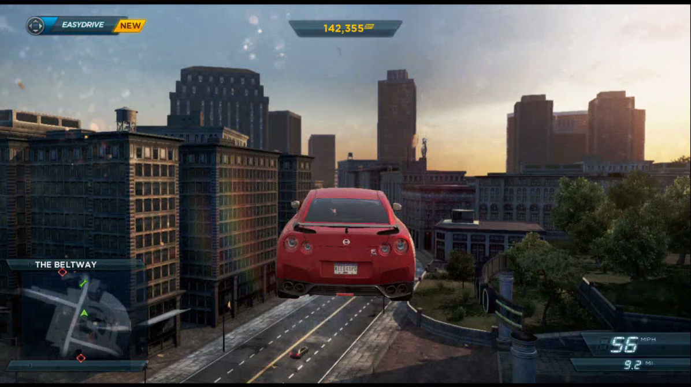
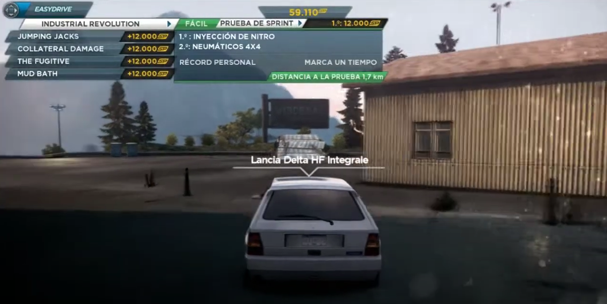

Как музыка переносит меня в игры
Музыки пост.
Как-то так вышло, что в детстве среди всех игр чаще всего я играл в гонки. Конечно же, чаще всего это был NFS. В более зрелом возрасте я решил перепройти, допройти и просто пройти наиболее интересные для меня игры серии. Во-первых, оно того стоило. Во-вторых — боже, какая там музыка… Сегодня про NFS Underground 2, Pro Street и Most Wanted 2012.
NFS Underground 2
Музыка в первом и второй Подземке идеально описывается так: это то, что пацаны поставили бы себе в магнитолу на кассете.

Helmet — Crashing Foreign Cars. Играет он во всех заездах, но у меня он ассоциируется с конкретными «легальными» гонками в аэропорту, где нужно выбирать траекторию, точки торможения, выбирать момент для нитро, слипстрим. И это всё в старой аркаде! Сколько боли и счастья в этой песне.
https://youtu.be/IfiL_xC1ekE?si=3aWd3e8zihpDeBOm

Skindred — Nobody. Это шоссе, увороты от транспорта и большая скорость.
https://youtu.be/WsQhuxPsSjE?si=MTUPRLbJNi-BadWL

Paul van Dyk — Nothing But You (feat. Hemstock & Jennings) (CIrrus Mix). Для меня это путешествие по городу между гонками, заезд на время за фотографией. Очень спокойная и мелодичная.
https://youtu.be/86egBLSDDcE?si=er4KWajdlrtDIzEl
NFS ProStreet
Имхо, в игре самая правильно подобранная музыка. Игровой процесс строится вокруг того, что мы выступаем на фестивалях и добираемся до фестивальных боссов. Это легальные гонки, это зрители, это развлечение. И играет тут в основном музыка для фестивалей, для танцпола. Я даже плейлист собирал: https://soundcloud.com/tom_suworof/sets/nfs-prostreet. Как оказалось, большинство крутых треков играет всего в паре режимов — Speed Challenge и Top Speed Run — зато какие это режимы.

Peaches — Boys Wanna Be Her (Tommie Sunshine's Brooklyn Fire Retouch). Спокойная танцевальная музычка, А ТЫ В ЭТО ВРЕМЯ ЛЕТИШЬ СО СКОРОСТЬЮ 400 КМ/Ч, УКЛОНЯЯСЬ ОТ СТОЛБОВ И ОПОР МОСТОВ.
https://youtu.be/8uzRR-vxZ60?si=9sauWWytxj7nKO4Q

Junkie XL ft. Lauren Rocket — More (Junk O Punk Remix). Это классика. У трека несколько десятков исполнений.
https://youtu.be/ymlof3ZLs20?si=GmsElsUmp4Y9GB3k (видос какой-то неподходящий)

Bloc Party - Prayer (Does It Offend You, Yeah? Remix). TOTALED. Опять же, летишь под 400 км/ч по несчастной Неваде на Ford GT, налетаешь на кочку и улетаешь в горы. Тачка в тотал, игровых звуков нет, только этот грустный трек. Это я всё помню, когда мы с братьями играли на его PS2 лет -дцать назад, а оказывается, что это мем.
https://youtu.be/y1F6WyEtvTA?si=G6vNKKS5vEzpTF-j
NFS Most Wanted 2012
Игра — результат очень плохого менеджмента со стороны EA. В сети уже достаточно роликов о том, как команда Criterion Games планировала сделать идейное и сюжетное продолжение оригинального MW 2005, однако из-за сроков (каких?) пришлось резать абсолютно всё. Однако музыка… ман, это вышка.

Heaven's Basement — I Am Electric. Это напряжённая гонка с кучей заносов и трамплинов. Собственно, трек тоже с перепадами настроений.
https://youtu.be/XjRaKId4Rps?si=nKgj1-zwdYa1lalh

The Chemical Brothers — Galvanize. Побережье, маяк, Лянча Дельта Интеграле Эволюционе. А вообще я не ожидал услышать эту песню.
https://youtu.be/Xu3FTEmN-eg?si=vKqSqMzZ_kPAUUu8

Muse — Butterflies and Hurricanes. Это открывающая песня. Это старт игры. Это ожидание. Это YOU’VE GOT TO BE THE BEST, о чём вся идея Чёрного списка в игре. А до этого она была в интро F1 05 — эксклюзив для PS2. Сони и всегда знали толк в хорошей музыке. И это просто лучшая песня.